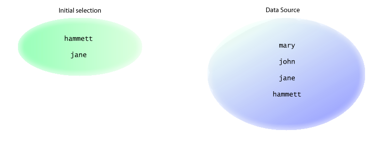
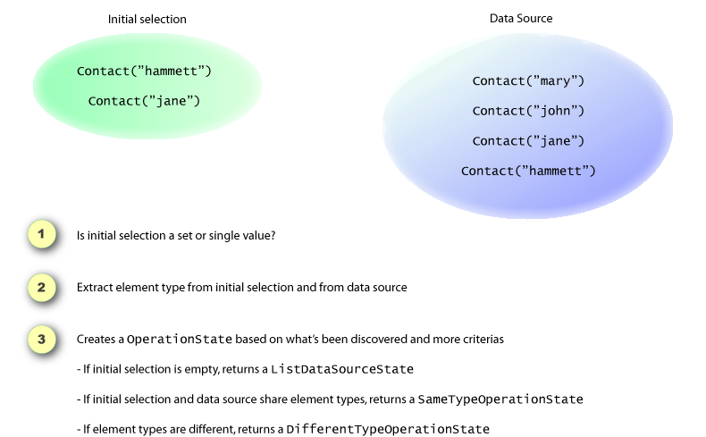

How FormHelper works with sets
FormHelper supports a broad range of scenarios when dealing with sets. Sets are used when Select and CheckboxList are generated. It is adamant that you know how it works when dealing with sets.
Initial Selection and Data Source
For Select and CheckboxList generation, the common target is considered the initial selection set. The value supplied as the data source is treated as the complete set. The initial selection must be a subset of the data source set.
This is very obvious and works nicely when both sets are composed of primites and both sets have same types. But not every application has this scenario to work with.
How it works
The FormHelper makes a few verifications which help it to decide on an approach based on the sets available. See the image below.
If the types are not primitive types, it is up to the programmer to inform the property the element has that identifies the instance, using the value parameter. The programmer can also specify the text parameter which is used to identify the property that returns a descriptive text about the element instance.
The sourceProperty parameter is used to identity the property that should be used on the html element. This is only helpful when the types are different and the identification property on the data source element is different from the identification property on the initial selection elements.
The suffix parameter is used to override the suffix used on the generate element names. FormHelper will always try to use the value specified for the value parameter which is right for almost all situations, but one: when you are dealing with different types on the sets but the initial set is null and the FormHelper won't be able to identify that. So if you have different types and you know in advance that the initial set can be empty or null, specify the suffix parameter.
Generated by Castle Anakia.
Sponsored by  Castle Stronghold.
Castle Stronghold.